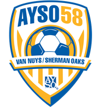

PlayMetrics Migration Resources
Live project dashboard showing verified configuration, completed steps, pending tasks, merchant account items, pre-launch sequence, and go-live checklist. All data verified from the test parent registration walkthrough on April 26, 2026.
Open Status Dashboard →SC website redirect steps, rotator banners, email templates, social media graphics, and go-live communication plan. All 10 AYSO assets embedded for preview and download.
Open Guide →Side-by-side translation of AYSO/SportsConnect and PlayMetrics terminology. 90+ concepts mapped across registration, payments, compliance, rosters, and program setup, re-checked against the October 2026 Help Center and PlayMetrics' own AYSO glossary. Updated October 26, 2026.
Open Guide →How volunteer compliance works now that Sports Connect and Sports Affinity are retired: the Club → Governing System pipeline, what each volunteer completes (JDP, SafeSport, AYSOU), the final staff-title tiers, tracking Verified status, fingerprinting, and who to contact. Updated October 25, 2026.
Open Guide →What the Region 58 Volunteer Hub is and how it walks a volunteer through compliance and training, how it worked on the Sports Connect bridge, and a proposed plan for moving its source of truth to the PlayMetrics Governing System — with a who-does-what table reconciling the Hub, PMGS and the region's people. Prepared October 26, 2026.
Open Guide →12-step interactive checklist for importing historical player data from SportsConnect. Covers data cleanup, deduplication, export automation, BC verification handling, and CSV upload.
Open Guide →For Steven and Sara, with a printable one-page card for Division Coordinators. The full path from "registration is collecting names" to "players are on teams and know it" — In-House league, team shells, all 16 divisions with scoring rules, coach requests, team assignments scoped per coordinator, drag-and-drop rostering, and the deliberate notify step. Written for people coming from SportsConnect, with every step sourced from the Recreational League Operations and Coaching & Divisional Coordinator webinars. Supersedes the earlier Leagues & Divisions Setup runbook.
Open Guide →For Division Coordinators with self-service access. The complete working loop: rostering players by drag-and-drop in Team Assignments, the Notify Players commit step (and why skipping it silently loses your work), reading the roster status board, inviting from the program waitlist with expirations and an attention-getting subject, and closing the loop after a family registers. Built from the live coordinator walkthrough sessions with Help Center screenshots.
Open Guide →For Ben Hauser and anyone involved in game scheduling. Maps every SC scheduling concept to its PlayMetrics equivalent — fields, matchups, time slots, standings, score entry, practice planning, and auto-notifications. Includes the expected PM workflow and what we're waiting on (scheduling webinar).
Open Guide →For Steve Post and the ratings working group. Pulls together everything about player ratings across all three systems — the automation pipeline where ratings live and the draft is balanced, the portal where directors view them, and PlayMetrics' own native tryout ratings and auto-draft. Answers the opposing-roster question (coaches can't see other teams in PM), maps the full end-to-end process, and ends with gaps and open questions to probe. A starting point for the conversation, not a decision.
Open Resource →